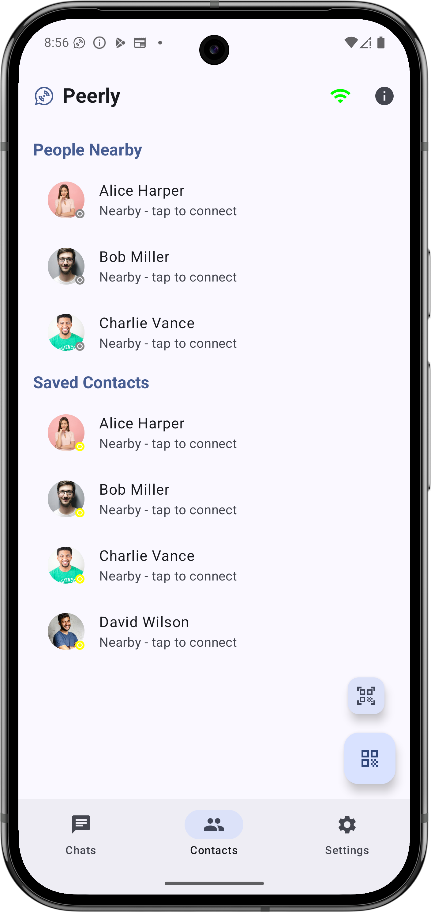
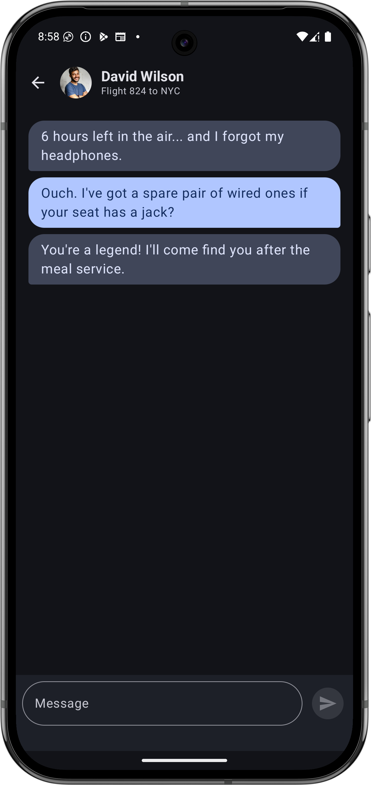
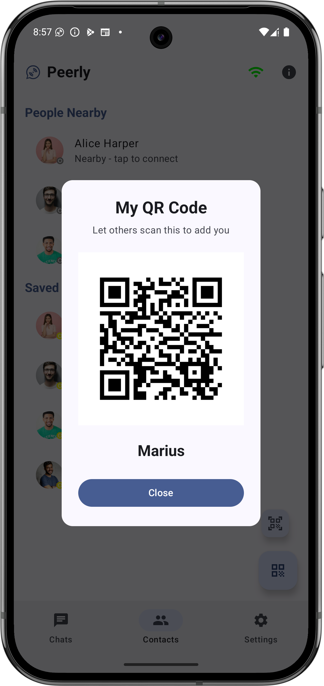

Mariusz Czapran
Knowledge Manager & Android Developer
Transitioning years of IT industry experience into building mobile applications.
Transitioning years of IT industry experience into building mobile applications.
Peerly is a privacy-first, serverless Android messaging app engineered for completely off-the-grid communication. Operating without reliance on centralized servers, cloud databases, cellular networks, or internet connectivity, the application transforms consumer mobile devices into local, resilient grid nodes. It offers a 100% free and ad-free experience for seamless communication at festivals, remote travel environments, or during emergency network outages.
As the end-to-end architect, I executed the full product lifecycle: designing asynchronous node discovery, engineering local state persistence, establishing identity validation via QR code handshakes, and building a responsive Jetpack Compose interface. Peerly is live and available on the Google Play Store.
The application is written in native Kotlin utilizing a modern declarative Jetpack Compose UI architecture. It leverages low-energy peripheral radios to handle continuous background scanning and automated cryptographic validation handshakes seamlessly.
NearbyService foreground component to prevent system process termination and ensure mesh stability.onConnectionSuccess) to automatically dispatch identity profiles and receive contact details upon radio link validation.supportedModes and enforce peak high-refresh-rate layouts on high-end panels.FLAG_HARDWARE_ACCELERATED streams to prevent rendering stuttering under heavy networking loads.ChatsScreen layout engine, reactive flows merge active local radio endpoints with saved structural profiles via PreferenceManager.DataStore Preferences pipelines to handle zero-knowledge user identities.androidx.biometric system abstractions to protect active chat databases behind biometric filters or device PIN locks.androidx.camera2 pipeline paired with Google ML Kit Barcode Scanning for instant identity validation via cryptographic QR code handshakes.Meticulously structured minimalist interfaces optimized for readability and fluid user progression.



Technical Permission Notice: In adherence to Android system policies, hardware scans for Bluetooth LE and Wi-Fi Direct structures are bundled under system Location permissions. Peerly accesses these endpoints solely to discover adjacent hardware nodes; no GPS coordinates are captured, analyzed, or stored at any point.